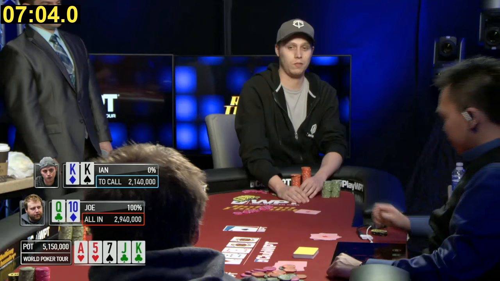

Reading a real poker hand from video in about 1 second
World Poker Tour final-table clip (CC BY 3.0), 7.5 minutes · 100 tests pass · commits
9079e0f,
400836e and
97ddb5c
poker-memory read VIDEO turns the clip into the whole hand: players, seats, button, blinds, each
player's cards, the board, and every action with its amount and time. It reads the TV graphics instead of watching
every picture. My frame-by-frame reading by eye is now only the answer key.Time, reader already running
0.99–1.0 sgoal < 1 s: on the line
Medians of 0.994 s and 1.003 s in 2 runs. Single reads 0.99 to 1.12 s.Time, fresh start
2.3 s✗
Starting Python and loading the libraries alone takes 1.0 s.Cost per hand
$0.0004goal < $0.10 ✓
Only if hands are read back to back. A Windows machine left waiting between clips costs $0.18 a hand.Correct
26 of 27
Every card, owner, seat and amount. One fold is timed 3.1 s late.What the reader looks at

Cards
Player name
Action and amount
Board
Each card sits in the same panel as its owner's name, so no detector has to guess whose cards they are. The
suit comes from the card's colour (this deck has four colours), and a 1.9 MB text model reads the rank.
Before the flop, panels appear in the order players act, which gives the button and the blinds.
Why no card-detection model: none of the ready-made ones I found was
trained on TV graphics or four-colour decks, and the common ones carry the AGPL licence. Boxes drawn from the
reader's own coordinates.
How it skips 95% of the video
Where the time goes
Checked against the hand read by eye
Each dot is one event. Up means the reader timed it later than I did by eye. Within 3 s counts as right.
✓Stakes 30,000 / 60,000, ante 10,000
✓Button on seat 5 (Andreas), 5 players
✓Ian, the hero: K♠ K♦
✓Joe: Q♣ 10♦
✓David: 6♠ K♥
✓Ping: 9♥ Q♠
✓Andreas: 10♥ 6♣
✓Result: Joe +1,520,000, Ian −1,490,000
Fixed after review: the end of the video
The reader stopped at the last keyframe, so the last few seconds were never read. A test cuts the clip just after Joe's all-in, which then falls in that blind spot.
The test fails on the old code and passes now. In the full video the unread part was the last 4.3 s
(104 pictures), after the hand was over, so the full result did not change: still 26 of 27. Reading it costs about 0.01 s.
Cost per hand
Back to back means one hand after another with no wait between, such as a pile of recordings.
A machine kept on to wait for the next 7.5-minute clip pays for the wait too. Price: the Azure list price for this exact machine (Standard_D16as_v5, AMD EPYC 7763,
8 cores, West US 3, pay as you go), read today from the Azure retail price API. It costs $1.424 an hour with Windows and $0.688 with Linux.
I count the whole machine for the length of each read, although a read keeps only 10 of its 16 threads busy.
Watch out
- Under 1 s only when the reader is already running: a server, or one command reading many videos. A fresh start takes 2.3 s, and starting Python and loading its libraries take 1.0 s of that.
- No margin left. Two runs gave medians of 0.994 s and 1.003 s. The old code gave 0.988 s and 1.005 s the same day, so reading the end costs about 0.01 s and the shared machine moves the rest. Single reads took up to 1.12 s.
- Cheap only when hands are read back to back. A machine kept on to wait for the next 7.5-minute clip pays for the wait: $0.18 a hand with Windows, over the goal, and $0.09 at the Linux price.
- Tuned and graded on one hand. The rules were tuned on this clip and checked on the same clip. A second hand would show whether they hold. My answer key's times are good to 1 to 3 s, and its seat numbers and button are inferred.
- A read that misses things still ends normally. Gaps are printed as comment lines, but the command does not fail.
- The hero is a guess: the player who acted last. Right here (Ian), not checked on other hands.
- Decoding the video is the floor. It takes 0.85 s of the second. This machine has no graphics card, so the CPU does all the decoding.
- Only this broadcast's graphics. The box positions fit World Poker Tour season 16 at 1280×720, one hand per video.
- Stacks are minimums. The graphics never show stacks, so the reader knows a stack exactly only when an all-in shows it.
Run it:
poker-memory read VIDEO (install the vision extra first)Check it:
python scripts\check_fast_read.py examples\real\wpt_rolling_thunder.yamlTime it:
python scripts\bench_fast_read.py VIDEOEvery decision, with its evidence:
.audit/fast-reader.tsv (76 entries)